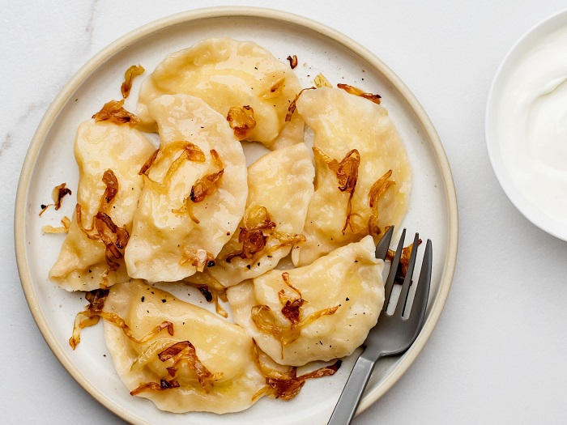
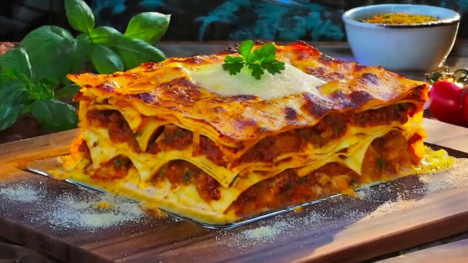
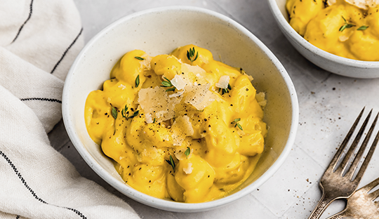

Opcion de pastas clasicas
Pastas clásicas Son las recetas tradicionales que forman parte de la cocina de todos los días. Incluyen pastas sin relleno como spaghetti, penne o fettuccine, acompañadas con salsas típicas como tomate, bolognesa, crema o pesto. Se destacan por su simpleza y por el protagonismo de la salsa, siendo ideales para comidas prácticas, sabrosas y reconfortantes.
Opcion de pastas rellenas
Las pastas rellenas representan una de las preparaciones más tradicionales y queridas de la cocina. Se elaboran con una masa fresca y suave que envuelve distintos rellenos, creando una combinación equilibrada entre textura y sabor en cada bocado. Pueden llevar carne, pollo, verduras, ricota o mezclas de quesos, adaptándose a todos los gustos.
Pasta cremosa con panceta, ajo y parmesano
Esta pasta cremosa con panceta, ajo y parmesano es una receta que se destaca por su equilibrio perfecto entre intensidad y suavidad. La panceta dorada aporta un sabor profundo y ligeramente ahumado, con ese toque crocante irresistible que contrasta con la textura tierna de la pasta. El ajo, apenas salteado, suma un aroma envolvente que realza todos los ingredientes sin opacarlos.
- 250 g de pasta (spaghetti, fettuccine o penne)
- 150 g de panceta en tiras o cubitos
- 2 dientes de ajo picados
- 200 ml de crema de leche
- ½ taza de queso parmesano rallado
- Sal y pimienta a gusto
- Un chorrito de aceite de oliva
- Perejil fresco picado (opcional)
Comenzá cocinando la pasta en abundante agua con sal hasta que esté al dente. Antes de colarla, reservá un poco del agua de cocción. Mientras tanto, en una sartén grande, dorá la panceta a fuego medio hasta que esté bien crocante y haya soltado su sabor. Agregá el ajo picado y cocinalo apenas unos segundos para que libere su aroma sin quemarse.
Incorporá la crema de leche y dejá que se cocine a fuego bajo hasta que espese ligeramente. Sumá el queso parmesano rallado y mezclá hasta que se funda y se forme una salsa suave y cremosa; si está muy espesa, agregá un poco del agua de cocción reservada. Finalmente, añadí la pasta a la sartén y mezclá bien para que se impregne con la salsa. Ajustá con sal y pimienta, serví caliente y, si querés, terminá con un poco más de parmesano y perejil fresco por encima.

Varenikes
Con su origen en Europa del Este, los varenikes se parecen a los pierogi polacos en su forma y preparación pero con un sello propio dentro de la gastronomía judía. Su preparación suele ser un momento compartido entre generaciones, con abuelas y madres enseñando a los más jóvenes los secretos de la receta. Su popularidad trascendió fronteras y hoy es un plato que se encuentra en todos lados, en especial en Argentina, donde la comunidad judía es una de las más grandes de América.
- 2 huevos
- 2 vasos de harina común 0000
- Agua (cantidad necesaria)
- 1 chorrito de aceite (2 cucharadas)
- 1 cucharadita de sal
- 750 g de puré de papa
- Queso a eleccion
- Aceite, sal y pimienta
- Nuez moscada
- Manteca
- Leche
Colocar en un bowl la harina, incorporar los huevos, el aceite y la sal. Agregar el agua de coccion del puré y dejar descansar 20 minutos. Mientras condimentar puré con queso, nuez moscada, leche y manteca.Por otra parte, estirar la masa y con un cortapastas de 8 centímetros de diámetro formar círculos.
El puré deberia estar bastante espeso como para formar bolas de papa que van dentro de la masa. Incorporar el relleno y cerrar uniendo los dos extremos. Hervir en abundante agua con sal. Retirar con una espumadera. Servir con aceite de oliva, mucha cebolla frita y verdeo.

Pasticho
El pasticho venezolano es una versión tradicional y reconfortante de la lasaña, caracterizada por sus capas de pasta intercaladas con carne sazonada, salsa cremosa y abundante queso gratinado. Es un plato contundente, suave y lleno de sabor, ideal para compartir en reuniones familiares o comidas especiales.
- Láminas de lasaña pre-cocidas o con masa para lasaña casera
- 500 gr de carne molida de res
- 1 cebolla picada
- 2 dientes de ajo, picados
- 400 gr de tomate triturado
- 1 cucharadita de orégano
- 1 cucharadita de albahaca
- Sal y pimienta a gusto
- Aceite de oliva para cocinar
- Queso rallado (tipo amarillo o mozzarella) para gratinar
- 4 cucharadas de mantequilla
- 4 cucharadas de harina
- 4 tazas de leche
- Sal, pimienta y nuez moscada al gusto
Para preparar el pasticho, primero se sofríen en aceite de oliva la cebolla y el ajo; luego se agrega la carne molida y, una vez dorada, se incorporan el tomate triturado y los condimentos, cocinando a fuego medio hasta que la salsa espese. Aparte, se elabora la bechamel derritiendo mantequilla, sumando harina y luego leche de a poco, revolviendo hasta lograr una salsa cremosa, que se condimenta a gusto.
Con el horno precalentado a 180 °C, se arma el plato en un molde alternando capas de láminas de lasaña, carne y bechamel, repitiendo el proceso hasta completarlo. Se termina con queso rallado por encima y se hornea durante 30 a 40 minutos, hasta que esté dorado y burbujeante. Antes de servir, se deja reposar unos minutos para que tome mejor consistencia.

Gnocchis con Salsa de Zapallo
Es una receta de ñoquis con una salsa cremosa de zapallo y crema de leche, suave y levemente dulce. El parmesano aporta un toque salado que equilibra los sabores. Es un plato simple, reconfortante y perfecto para una comida casera cálida y sabrosa.
- 1 cda de aceite oliva
- 2 cdtas de Ajo Picado en Aceite de Oliva Gourmet
- 1 cdta de Tomillo Gourmet
- 250g de zapallo pelado y picado pequeño
- 200ml de agua
- 200ml de crema de leche
- Sal de Mar Gourmet
- Mix de Pimientas Gourmet
- 400g de gnocchi
- 20g de queso parmesano rallado
Para preparar esta receta, primero se precalienta una olla a fuego medio y se agrega el aceite de oliva junto con el ajo y el tomillo, mezclando constantemente durante un minuto para que liberen su aroma. Luego se incorpora el zapallo junto con el agua, se tapa la olla y se cocina entre 10 y 15 minutos, hasta que el zapallo esté bien tierno y se deshaga fácilmente al presionarlo contra el costado.
Una vez cocido, se añade la crema de leche y se licúa la preparación hasta obtener una salsa suave y cremosa. Se ajusta con sal y pimienta a gusto. Finalmente, se agregan los gnocchis y se dejan cocinar directamente en la salsa durante unos tres minutos. Se termina el plato con queso parmesano rallado por encima y se sirve caliente.
